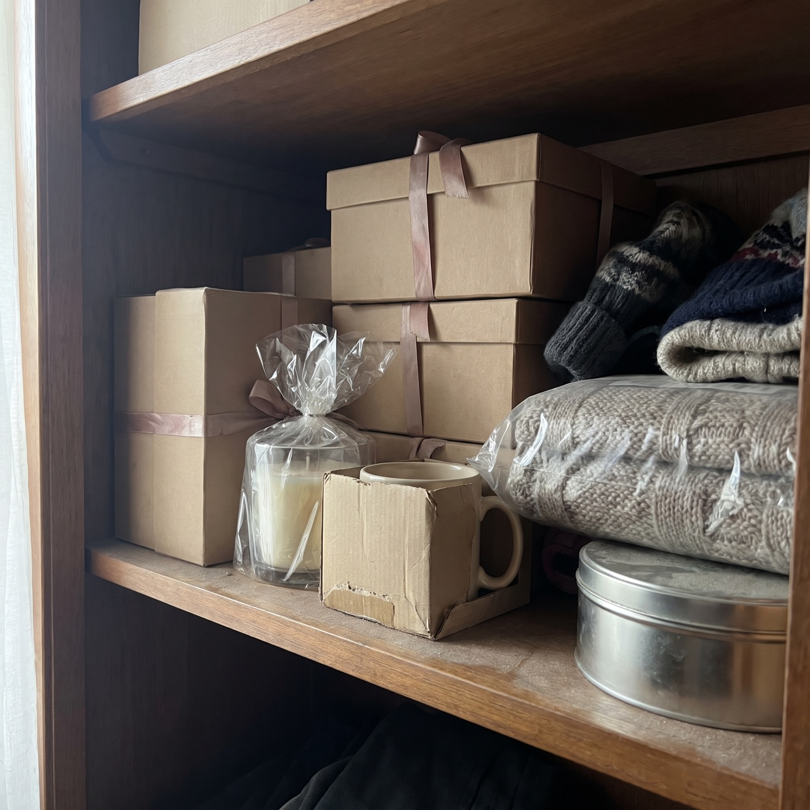
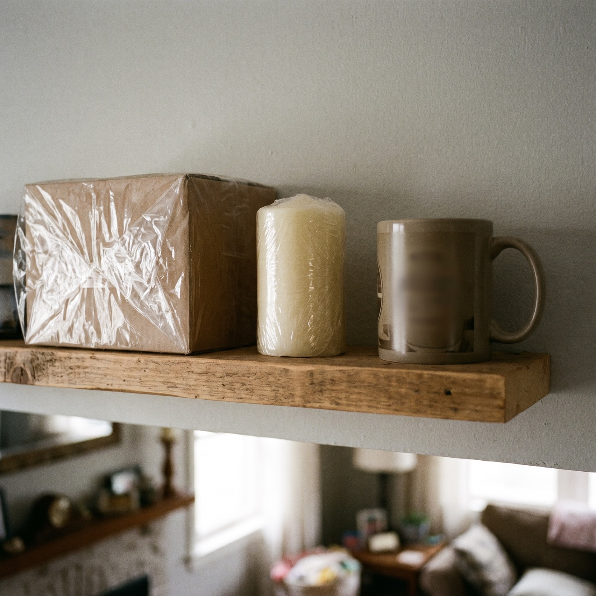
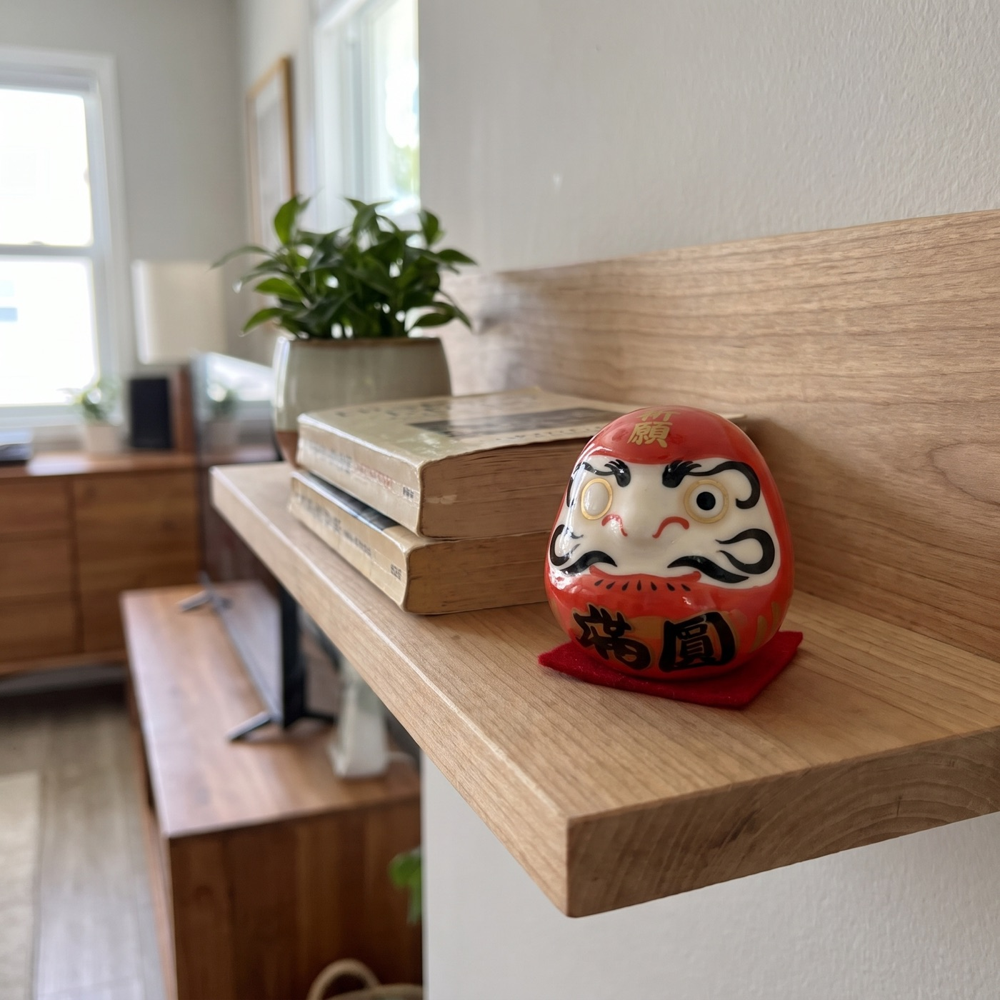
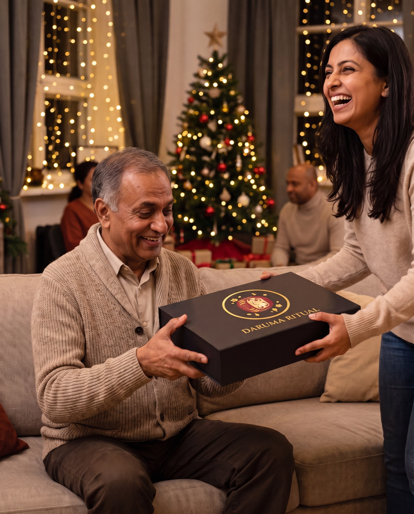
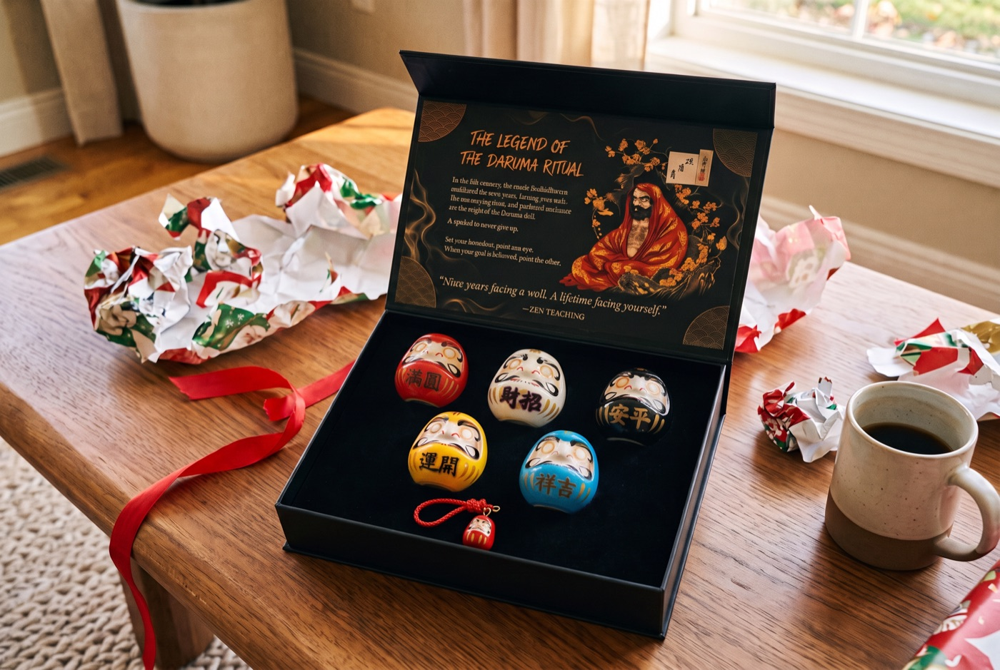

Christmas gift guide
The #1 Christmas Gift Mistake Almost Everyone Makes (And the 400-Year-Old Fix)
It isn't the price, and it isn't the wrapping. It's what happens to the gift on December 27th.
Every year we spend weeks choosing gifts. We compare, we wrap, we stand in line.
And every year, a few days after Christmas, a quiet sorting happens in almost every home. Some gifts get used. Most go into a closet, a drawer, or a box for the charity shop.
The problem isn't that people give bad gifts. It's that they give things, when the person on the other end wanted to feel something.
The mistake: buying an object instead of a moment
Think about the gifts you still remember from ten years ago. Chances are it isn't the expensive ones. It's the ones that came with a moment attached: a handwritten letter, a trip, something that meant "I see you, and I believe in you."
Now think about what usually ends up under the tree:
- A gift set of bath products in a plastic tray
- A candle that never gets lit
- A mug with a joke that's funny for one day
- Another pair of fuzzy socks
- A gadget that needs batteries nobody buys
None of these are bad. They're just forgettable. They ask nothing of the person and they say almost nothing about them.

It's not your fault. Nobody tells you what a good gift actually does
A good gift does three things. It feels personal. It's used, not stored. And it keeps saying something long after the wrapping paper is gone.
That's a hard brief. Most shops answer it with "more expensive" or "more novelty". Neither works.
In Japan, there's a much older answer. It's been given at the turn of the year for around 400 years, and it was built to do exactly those three things.
What Japan does differently every New Year
It's called a Daruma: a small, round doll modelled on Bodhidharma, the monk said to have meditated facing a wall for nine years. It's weighted at the bottom, so when you push it over, it rocks straight back up. That's why it goes with one of Japan's best-known sayings: fall seven times, rise eight.
But the strangest part is the face. A Daruma arrives with both eyes blank.
The person who receives it chooses one goal for the year and paints in the first eye. The doll sits somewhere they see it every day. The second eye only gets painted when the goal is done. Even Japanese election candidates do it: one eye at the start of the campaign, the second on election night.
It's not a decoration. It's a promise you can see.


Left: what usually sits on the shelf. Right: a Daruma with its first eye painted.
Why it never ends up in the closet
- It's personal: the person receiving it chooses their own goal
- It's used on day one: painting the first eye is a small ritual of its own
- It stays out: it only works where you can see it
- It keeps saying something: every time they look at it, they're reminded someone believed in them
This is the difference between a thing and a moment. The candle gets put away. The Daruma gets a place on the desk.
Official Daruma Ritual store · Free tracked shipping worldwide · 30-day returns
"Most Daruma you'll find online are souvenirs"
Search for Daruma and you'll find plenty of trinkets: painted faces, no story, no instructions. Hand one of those over and the person receiving it has no idea what to do with it.
How to tell a real ritual set from a souvenir
- Both eyes arrive blank. That's the whole point: you paint them.
- Each colour carries a meaning, so you can match a doll to a goal.
- It comes with the story and the ritual written down, so the person receiving it knows what to do.
- It's weighted at the base, so it rocks back up when pushed over.
We built the Daruma Ritual set around that idea: the doll, the story and the ritual, so the gift explains itself the moment the box opens.

What's in the Premium Set
Five ceramic Daruma, one in each of the classic colours: red, white, black, yellow and blue. Each colour has its own meaning, so you can choose a goal to match, or give a doll to each person in the family.
They sit in a black velvet tray inside a matte-black magnetic box, with the legend and the ritual printed on cards, so whoever opens it knows exactly what to do. A small chiming Daruma keychain comes with every set.

How the ritual works
It takes a minute to start and as long as the goal takes to finish:
- Day 1Choose one goal. Write it down and paint the first eye: the doll's own left, which is the one on your right as it faces you. Any black marker works (one isn't in the box).
- Every day afterThe Daruma sits where you'll see it: a desk, a shelf, a nightstand. One eye open, waiting.
- Week 4Look at it and ask yourself one honest question: what did I do this week toward the goal?
- The day it's donePaint the second eye. Keep it as a record, or start again with a new goal.
What people wrote to us
These are real messages from customers, quoted word for word with initials only.
“I was absolutely wowed when I received the package today. Both sets arrived completely unharmed. I am going to give them as holiday gifts. Blessed and grateful.”
“Finally I was able to perform our first ritual with my daughter and her husband. I will be purchasing more sets to give to my other children. … this was a good way to have them set goals to focus on all of the good things in their lives.”
“… I love the darumas and I would definitely buy more. I was able to gift the few as intended and keep one for myself.”
This is for you if…
- You want a gift people remember
- You're buying for someone who "has everything"
- You like gifts with a story behind them
- You want something the whole family can do together at New Year
Skip it if…
- You want something they'll use up and throw away
- You're looking for a joke gift
- You'd rather not talk about goals at all
Choose your set
Most people order 2 sets: one to give and one to keep, or one for each side of the family.
 1 Premium Set
1 Premium Set5 Daruma + 1 chiming keychain
2 Premium Sets10 Daruma + 2 keychains + $20 gift card free
3 Premium Sets15 Daruma + 3 keychains + $20 gift card free
Each set: 5 ceramic Daruma, matte-black magnetic box, legend & ritual cards. Free tracked shipping.
Official Daruma Ritual store · Free tracked shipping worldwide · 30-day returns
You have two choices this Christmas
You can do what everyone does: another candle, another gift set, another thing for the closet shelf.
Or you can give the person you love a small ritual that's been passed down for 400 years, and a reason to look at their desk every morning and remember who believed in them.
Official Daruma Ritual store · Free tracked shipping worldwide · 30-day returns
Questions
What exactly is in a set?
Five ceramic Daruma in red, white, black, yellow and blue, a matte-black magnetic gift box with a velvet tray, the legend & ritual cards, and a chiming Daruma keychain.
Is a pen or marker included?
No. Any black marker or brush pen works for the eyes.
Do I need to know anything about Japanese culture?
No. The ritual card in the box explains the steps in a minute.
How does shipping work?
Shipping is free and tracked to every country. The delivery estimate is shown at checkout; international post is slower in December, so order early for Christmas.
What if it's not right?
You have 30 days after it arrives to request a return.